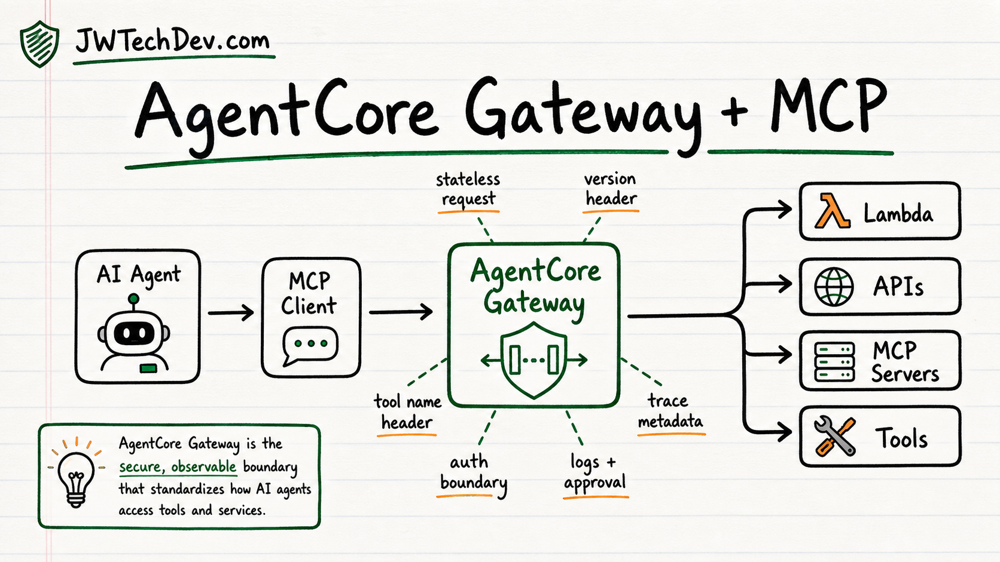

AWS AgentCore Gateway shows MCP is real infrastructure
AWS supporting the MCP 2026-07-28 spec through AgentCore Gateway is a useful signal: agent tooling is being pulled into normal cloud infrastructure patterns.

Quick answer
AWS AgentCore Gateway supporting the MCP 2026-07-28 spec matters because MCP is starting to look less like a local developer convenience and more like production infrastructure. The useful lesson is not just a new protocol version. It is routing, authentication, versioning, caching, tracing, error handling, and approval boundaries for AI agents.
MCP is growing up
For a while, MCP was easy to explain as the thing that lets AI tools connect to other tools. That is still useful, but it is not enough anymore.
AWS's AgentCore Gateway post makes the bigger point: MCP is being shaped into something that can survive outside a laptop demo.
The 2026-07-28 spec makes MCP stateless. That means each request carries the context it needs instead of depending on a hidden session between the client and server.
That sounds boring until you think like cloud infrastructure.
If request two must land on the same server as request one, you need sticky sessions, shared session storage, or extra routing tricks. That is manageable at small scale, but it gets messy when you want ordinary load balancing, retries, deployments, and failure recovery.
Stateless MCP makes the request easier to route through normal HTTPS infrastructure. That is not a small detail. That is the protocol learning how production systems work.
The gateway mental model matters
The most important idea in the AWS post is the gateway.
AgentCore Gateway can sit between agents and the systems they want to use. Instead of an agent directly reaching into every Lambda function, API, or tool server, the gateway becomes the controlled front door.
That is the right mental model.
Agents should not wander around infrastructure like they found a badge on the floor. They should go through a governed path.
A gateway can help define what tools exist, which protocol versions are supported, how requests are routed, what authentication applies, what metadata travels with the call, how errors show up, and how logs and traces connect back to the workflow.
That is the difference between "my agent can call a tool" and "my agent is part of an actual system."
Headers are not boring here
One of the new MCP changes AWS highlights is that request intent can move into headers like Mcp-Method, Mcp-Name, and MCP-Protocol-Version.
That matters because infrastructure can understand more without digging into the JSON body.
Load balancers, gateways, rate limiters, routers, and monitoring tools are better when they can reason at the HTTP layer.
This is one of those details that sounds too technical until the first outage. Then suddenly everyone cares which calls failed, which tool was being called, which version was used, whether the request should have been throttled, and why the monitoring dashboard treated everything like a mystery blob.
MCP becoming easier to observe and route is MCP becoming more operationally serious.
This is also an observability story
AWS also points to trace context support.
That matters because agent workflows are not one-step events. An agent might receive a request, call a tool, hit a gateway, invoke a Lambda function, query a service, return structured output, ask for approval, and then continue.
If you cannot trace that path, you do not really understand the system.
For builders, the better question is not only "did the model answer?" It is: what did the agent call, what was it allowed to access, which system handled the request, what version was used, what failed, what got logged, and what happens if the action needs rollback?
That is infrastructure thinking.
What builders should learn from this
If you are learning AI agents, do not stop at prompts.
Prompts matter, but they are not the full system. The skills that keep showing up are old cloud skills with a new interface:
- HTTP requests and headers
- load balancing
- authentication and authorization
- version negotiation
- caching
- tracing
- structured errors
- gateway patterns
- approval gates
- state management
That is why MCP is such a good learning topic. It forces you to connect AI workflows back to real architecture.
The model is only one part of the system. The tool path matters.
The bottom line
AWS AgentCore Gateway supporting the MCP 2026-07-28 spec is a signal.
MCP is moving from agent tool connector toward agent infrastructure contract.
The future is not just better prompts. The future is agents moving through controlled gateways, self-contained requests, explicit context, observable tool calls, and systems that know when to ask a human before doing something risky.
If you want to build with AI agents, learn the infrastructure around the agent. That is where the serious work lives.
Sources checked
Want the starter kit?
Grab the free JWTechDev.com starter kit if you want a practical way to connect cloud basics, AI workflows, and approval gates.
Get resources